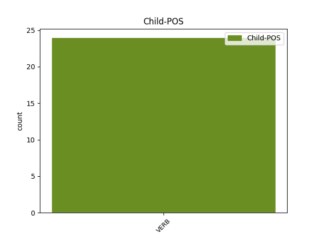

Distribution of features within this leaf



Agreement Rules sorted by frequency.
- When the dependent token is the conjunct(conj) of the head token, and the head token is VERB and the dependent token is AUX.
1 بوائز _ _ _ _ 0 _ _ _
2 ہاسٹل _ _ _ _ 0 _ _ _
3 کا _ _ _ _ 0 _ _ _
4 قیام _ _ _ _ 0 _ _ _
5 عمل _ _ _ _ 0 _ _ _
6 مےں _ _ _ _ 0 _ _ _
7 آئےگا آ VERB VM Mood=Ind|Tense=Fut|VerbForm=Fin 0 _ _ _
8 , _ _ _ _ 0 _ _ _
9 قبرستان _ _ _ _ 0 _ _ _
10 اور _ _ _ _ 0 _ _ _
11 عیدگاہ _ _ _ _ 0 _ _ _
12 کے _ _ _ _ 0 _ _ _
13 لیے _ _ _ _ 0 _ _ _
14 اراضی _ _ _ _ 0 _ _ _
15 مختص _ _ _ _ 0 _ _ _
16 کی _ _ _ _ 0 _ _ _
17 جائےگی جا AUX VAUX Mood=Ind|Number=Plur|Tense=Fut|VerbForm=Fin 7 conj _ ChunkId=VGF2|ChunkType=child|SpaceAfter=No|Tam=gA|Vib=گا
18 ۔ _ _ _ _ 0 _ _ _
1 جبکہ _ _ _ _ 0 _ _ _
2 پہلی _ _ _ _ 0 _ _ _
3 مرتبہ _ _ _ _ 0 _ _ _
4 منتخب _ _ _ _ 0 _ _ _
5 ہونے _ _ _ _ 0 _ _ _
6 والے _ _ _ _ 0 _ _ _
7 ارکان _ _ _ _ 0 _ _ _
8 اسمبلی _ _ _ _ 0 _ _ _
9 کو _ _ _ _ 0 _ _ _
10 وزارت _ _ _ _ 0 _ _ _
11 میں _ _ _ _ 0 _ _ _
12 شمولیت _ _ _ _ 0 _ _ _
13 کا _ _ _ _ 0 _ _ _
14 امکان _ _ _ _ 0 _ _ _
15 نہیں _ _ _ _ 0 _ _ _
16 ہے ہے VERB VM Mood=Ind|Number=Sing|Person=3|Tense=Pres|VerbForm=Fin|Voice=Act 0 _ _ _
17 لیکن _ _ _ _ 0 _ _ _
18 نو _ _ _ _ 0 _ _ _
19 منتخب _ _ _ _ 0 _ _ _
20 ارکان _ _ _ _ 0 _ _ _
21 کی _ _ _ _ 0 _ _ _
22 پیروی _ _ _ _ 0 _ _ _
23 میں _ _ _ _ 0 _ _ _
24 کوئی _ _ _ _ 0 _ _ _
25 کمی _ _ _ _ 0 _ _ _
26 نہیں _ _ _ _ 0 _ _ _
27 آئی _ _ _ _ 0 _ _ _
28 ہے ہے AUX VAUX Mood=Ind|Number=Sing|Person=3|Tense=Pres|VerbForm=Fin 16 mod _ ChunkId=VGF2|ChunkType=child|SpaceAfter=No|Tam=hE|Vib=ہے
29 ۔ _ _ _ _ 0 _ _ _
1 سارے _ _ _ _ 0 _ _ _
2 مسلمان _ _ _ _ 0 _ _ _
3 جگن _ _ _ _ 0 _ _ _
4 اور _ _ _ _ 0 _ _ _
5 وجیہ _ _ _ _ 0 _ _ _
6 اماں _ _ _ _ 0 _ _ _
7 کے _ _ _ _ 0 _ _ _
8 ساتھ _ _ _ _ 0 _ _ _
9 ہےں ہے AUX VM Mood=Ind|Number=Plur|Person=3|Tense=Pres|VerbForm=Fin|Voice=Act 30 udep _ AltTag=AUX-VERB|ChunkId=VGF|ChunkType=head|Stype=declarative|Tam=hE|Vib=ہے
10 آکسیجن _ _ _ _ 0 _ _ _
11 پر _ _ _ _ 0 _ _ _
12 رہنے _ _ _ _ 0 _ _ _
13 والے _ _ _ _ 0 _ _ _
14 کانگریس _ _ _ _ 0 _ _ _
15 کے _ _ _ _ 0 _ _ _
16 مسلم _ _ _ _ 0 _ _ _
17 قائدین _ _ _ _ 0 _ _ _
18 کی _ _ _ _ 0 _ _ _
19 کڑپہ _ _ _ _ 0 _ _ _
20 مےں _ _ _ _ 0 _ _ _
21 انتخابی _ _ _ _ 0 _ _ _
22 مہم _ _ _ _ 0 _ _ _
23 بنجر _ _ _ _ 0 _ _ _
24 زمین _ _ _ _ 0 _ _ _
25 پر _ _ _ _ 0 _ _ _
26 ہل _ _ _ _ 0 _ _ _
27 چلانے _ _ _ _ 0 _ _ _
28 کے _ _ _ _ 0 _ _ _
29 مانند _ _ _ _ 0 _ _ _
30 ہے ہے VERB VM Mood=Ind|Number=Sing|Person=3|Tense=Pres|VerbForm=Fin|Voice=Act 0 _ _ _
31 ۔ _ _ _ _ 0 _ _ _
Disagree Examples:
1 چونکہ _ _ _ _ 0 _ _ _
2 وہ _ _ _ _ 0 _ _ _
3 بھی _ _ _ _ 0 _ _ _
4 اس _ _ _ _ 0 _ _ _
5 معاملہ _ _ _ _ 0 _ _ _
6 میں _ _ _ _ 0 _ _ _
7 کافی _ _ _ _ 0 _ _ _
8 سنجیدہ _ _ _ _ 0 _ _ _
9 ہیں ہیں VERB VM Mood=Ind|Number=Plur|Person=3|Tense=Pres|VerbForm=Fin|Voice=Act 0 _ _ _
10 اور _ _ _ _ 0 _ _ _
11 قطعی _ _ _ _ 0 _ _ _
12 فیصلہ _ _ _ _ 0 _ _ _
13 چیف _ _ _ _ 0 _ _ _
14 منسٹر _ _ _ _ 0 _ _ _
15 کی _ _ _ _ 0 _ _ _
16 مرضی _ _ _ _ 0 _ _ _
17 پر _ _ _ _ 0 _ _ _
18 انحصار _ _ _ _ 0 _ _ _
19 کرے _ _ _ _ 0 _ _ _
20 گا گا AUX VAUX Gender=Masc|Mood=Ind|Number=Sing|Person=3|Tense=Fut|VerbForm=Fin 9 conj _ ChunkId=VGF2|ChunkType=child|SpaceAfter=No|Tam=gA|Vib=گا
21 ۔ _ _ _ _ 0 _ _ _
1 ان _ _ _ _ 0 _ _ _
2 کے _ _ _ _ 0 _ _ _
3 بھکتوں _ _ _ _ 0 _ _ _
4 مےں _ _ _ _ 0 _ _ _
5 عام _ _ _ _ 0 _ _ _
6 آدمی _ _ _ _ 0 _ _ _
7 سے _ _ _ _ 0 _ _ _
8 لےکر _ _ _ _ 0 _ _ _
9 ہندوستان _ _ _ _ 0 _ _ _
10 کے _ _ _ _ 0 _ _ _
11 صدر _ _ _ _ 0 _ _ _
12 جمہوریہ _ _ _ _ 0 _ _ _
13 بھی _ _ _ _ 0 _ _ _
14 شامل _ _ _ _ 0 _ _ _
15 تھے تھا VERB VM Gender=Masc|Mood=Ind|Number=Sing|Person=3|Tense=Past|VerbForm=Fin|Voice=Act 0 _ _ _
16 لیکن _ _ _ _ 0 _ _ _
17 یہ _ _ _ _ 0 _ _ _
18 وہی _ _ _ _ 0 _ _ _
19 ستیہ _ _ _ _ 0 _ _ _
20 سائی _ _ _ _ 0 _ _ _
21 بابا _ _ _ _ 0 _ _ _
22 ہےں ہے AUX VM Mood=Ind|Number=Sing|Person=3|Polite=Form|Tense=Pres|VerbForm=Fin|Voice=Act 15 conj _ AltTag=AUX-VERB|ChunkId=VGF2|ChunkType=head|Stype=declarative|Tam=hE|Vib=ہے
23 جو _ _ _ _ 0 _ _ _
24 ہمیشہ _ _ _ _ 0 _ _ _
25 کسی _ _ _ _ 0 _ _ _
26 نہ _ _ _ _ 0 _ _ _
27 کسی _ _ _ _ 0 _ _ _
28 تنازعہ _ _ _ _ 0 _ _ _
29 مےں _ _ _ _ 0 _ _ _
30 گھرے _ _ _ _ 0 _ _ _
31 رہے _ _ _ _ 0 _ _ _
32 ۔ _ _ _ _ 0 _ _ _
1 عشرت _ _ _ _ 0 _ _ _
2 جہاں _ _ _ _ 0 _ _ _
3 پر _ _ _ _ 0 _ _ _
4 لشکر _ _ _ _ 0 _ _ _
5 طیبہ _ _ _ _ 0 _ _ _
6 کے _ _ _ _ 0 _ _ _
7 خودکش _ _ _ _ 0 _ _ _
8 اسکواڈ _ _ _ _ 0 _ _ _
9 کا _ _ _ _ 0 _ _ _
10 رکن _ _ _ _ 0 _ _ _
11 ہونے _ _ _ _ 0 _ _ _
12 کا _ _ _ _ 0 _ _ _
13 الزام _ _ _ _ 0 _ _ _
14 ہے ہے VERB VM Mood=Ind|Number=Sing|Person=3|Tense=Pres|VerbForm=Fin|Voice=Act 0 _ _ _
15 اور _ _ _ _ 0 _ _ _
16 لشکر _ _ _ _ 0 _ _ _
17 طیبہ _ _ _ _ 0 _ _ _
18 کے _ _ _ _ 0 _ _ _
19 سرکردہ _ _ _ _ 0 _ _ _
20 رکن _ _ _ _ 0 _ _ _
21 مزمل _ _ _ _ 0 _ _ _
22 نے _ _ _ _ 0 _ _ _
23 اُسے _ _ _ _ 0 _ _ _
24 تنظیم _ _ _ _ 0 _ _ _
25 مےں _ _ _ _ 0 _ _ _
26 شامل _ _ _ _ 0 _ _ _
27 کیا _ _ _ _ 0 _ _ _
28 تھا تھا AUX VAUX Gender=Masc|Mood=Ind|Number=Sing|Person=3|Tense=Past|VerbForm=Fin 14 conj _ ChunkId=VGF2|ChunkType=child|SpaceAfter=No|Tam=WA|Vib=تھا
29 ۔ _ _ _ _ 0 _ _ _
1 ہمارا _ _ _ _ 0 _ _ _
2 واحد _ _ _ _ 0 _ _ _
3 مقصد _ _ _ _ 0 _ _ _
4 تمل _ _ _ _ 0 _ _ _
5 عوام _ _ _ _ 0 _ _ _
6 کو _ _ _ _ 0 _ _ _
7 باغیوں _ _ _ _ 0 _ _ _
8 کے _ _ _ _ 0 _ _ _
9 چنگل _ _ _ _ 0 _ _ _
10 سے _ _ _ _ 0 _ _ _
11 آزاد _ _ _ _ 0 _ _ _
12 کروانا _ _ _ _ 0 _ _ _
13 تھا تھا VERB VM Gender=Masc|Mood=Ind|Number=Sing|Tense=Past|VerbForm=Fin|Voice=Act 0 _ _ _
14 اور _ _ _ _ 0 _ _ _
15 اب _ _ _ _ 0 _ _ _
16 وقت _ _ _ _ 0 _ _ _
17 آ _ _ _ _ 0 _ _ _
18 گیا _ _ _ _ 0 _ _ _
19 ہے ہے AUX VAUX Mood=Ind|Number=Sing|Person=3|Tense=Pres|VerbForm=Fin 13 conj _ ChunkId=VGF2|ChunkType=child|Tam=hE|Vib=ہے
20 کہ _ _ _ _ 0 _ _ _
21 سنہالی _ _ _ _ 0 _ _ _
22 اور _ _ _ _ 0 _ _ _
23 تمل _ _ _ _ 0 _ _ _
24 افراد _ _ _ _ 0 _ _ _
25 ملک _ _ _ _ 0 _ _ _
26 میں _ _ _ _ 0 _ _ _
27 مل _ _ _ _ 0 _ _ _
28 جل _ _ _ _ 0 _ _ _
29 کر _ _ _ _ 0 _ _ _
30 خوش_حال _ _ _ _ 0 _ _ _
31 زندگی _ _ _ _ 0 _ _ _
32 گزاریں _ _ _ _ 0 _ _ _
33 ۔ _ _ _ _ 0 _ _ _
1 سروے _ _ _ _ 0 _ _ _
2 کے _ _ _ _ 0 _ _ _
3 مطابق _ _ _ _ 0 _ _ _
4 ریاست _ _ _ _ 0 _ _ _
5 کی _ _ _ _ 0 _ _ _
6 تمام _ _ _ _ 0 _ _ _
7 نشستوں _ _ _ _ 0 _ _ _
8 سے _ _ _ _ 0 _ _ _
9 مقابلہ _ _ _ _ 0 _ _ _
10 کرنے _ _ _ _ 0 _ _ _
11 والی _ _ _ _ 0 _ _ _
12 بی _ _ _ _ 0 _ _ _
13 ایس _ _ _ _ 0 _ _ _
14 پی _ _ _ _ 0 _ _ _
15 کو _ _ _ _ 0 _ _ _
16 صرف _ _ _ _ 0 _ _ _
17 دو _ _ _ _ 0 _ _ _
18 فیصد _ _ _ _ 0 _ _ _
19 ووٹ _ _ _ _ 0 _ _ _
20 ملیں_گے مل VERB VM Gender=Fem|Mood=Ind|Number=Plur|Tense=Fut|VerbForm=Fin|Voice=Act 0 _ _ _
21 جبکہ _ _ _ _ 0 _ _ _
22 جنتادل _ _ _ _ 0 _ _ _
23 یو _ _ _ _ 0 _ _ _
24 کو _ _ _ _ 0 _ _ _
25 اس _ _ _ _ 0 _ _ _
26 سے _ _ _ _ 0 _ _ _
27 بھی _ _ _ _ 0 _ _ _
28 کم _ _ _ _ 0 _ _ _
29 ووٹ _ _ _ _ 0 _ _ _
30 مل _ _ _ _ 0 _ _ _
31 سکتے _ _ _ _ 0 _ _ _
32 ہیں ہے AUX VAUX Mood=Ind|Number=Plur|Person=3|Tense=Pres|VerbForm=Fin 20 conj _ ChunkId=VGF2|ChunkType=child|Tam=hE|Vib=ہے
33 - _ _ _ _ 0 _ _ _